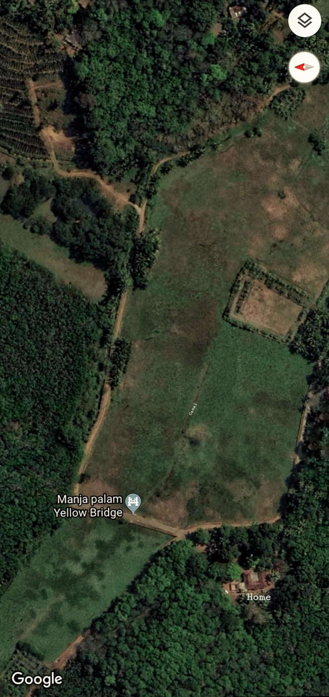
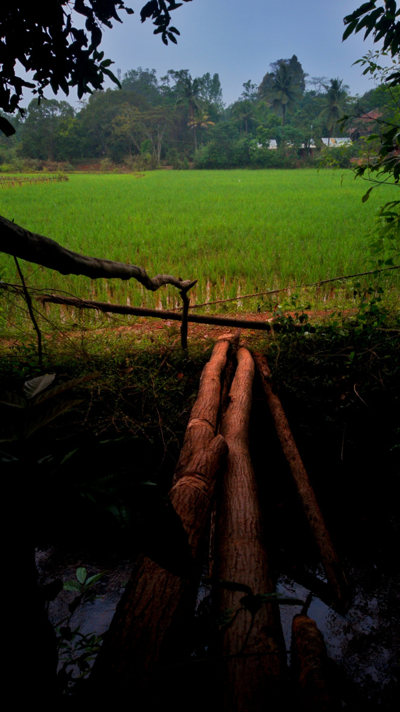

Big Fish and Blue Genies
I knew it was my last day, that I'd be gone forever. I remembered that I was wearing all- whites, as a proper dead man should be.
 Image credit: John Sebastian
Image credit: John Sebastian
We the ’95 kids have a very trivial privilege – we can remember which class we attended which year. Always. My father buys a lot of books into our ever growing, huge library. And he expects me to read them all! Once, when I was in 5th, he quoted something from “Khazakinte Ithihasam“ (The Legend of Khasak by O V Vijayan) and asked, to my blank face,”haven’t you read it yet? “. I was only ten!
It was another rainy June; 2004. The first monsoon had just set in. The rains that begin early in the dawn as a slow shower of tiny droplets, then becoming heavy precipitation when it’s time to leave home for school, and drench you so intimately – keep you cold and at the verge of peeing all through the day.
The second bout of rains begins by mid September. During this stretch, the skies send prophecies of unstinting showers every afternoon by sending distant thunders that come closer hour after hour. Finally the sky empties itself as the National Anthem ends and the last bell is rung. You reach home in wet uniforms, under an umbrella that had probably questioned its purpose. The house welcomes you to its cozy darkness and the aroma of hot coffee and fried snacks. (Branchy trees flanking the streets would embrace the electric lines and short circuit the entire village. Electricity wouldn’t return until very late).
 |
|---|
| *Our valley in the summer. Courtesy: Google Earth. Sadly the location of the Yellow Bridge on the map is wrong. * |
Our school was so finicky about uniforms, especially shoes. However, during the rains you could wear other footwear – but only black ones, with backstraps; even on Wednesdays, the all- white day of the week. So, in the June of my 4th standard, I got a new pair of sandals. Very lightweight, waterproof and weird, hard black. I loved those!
The saddest aspect of going to school then wasn’t the monsoon. It was that the cousins who’d come home for vacation from Banglore and Bombay would go back only by the end of the month. Theirs’ reopened only in July! Everyday, we’d leave them home. We’d sit through classes while they watched the rain through the bedside window, snuggling under our grandfather’s warm blanket.
In the evenings we’d run along the road across the vast fields that filled the valley and the canal cleaving it. And we’d go out, even without changing, to race paper boats, to jump into the overflowing stream from the canopy hiding it from the Yellow Bridge,and finally sit on the concrete ridges (which had just been built then) of the canal that ran to the center of the paddy fields. The concrete ridges were taller than the clay bunds, carried a lot of water and its flat top would dry quickly after a rain. We’d dangle our legs in the water, feel the hydrillia tangle about the toes and watch tiny fish race past, constantly struggling to fight the virile monsoon gush.
 |
|---|
| The landscape reminded me of home. |
The canal opens out at the middle of the paddy fields into a deep ‘sinkhole’ from where water traverses to all directions, overflowing over bunds. Tiny islands of clay with an overgrowth of paddy and grass float around on its relatively stagnant boundaries.
One Wednesday, we were on the ridge, kicking water at each other, when one of our aunts called us in. I pulled myself out and immediately noticed that I was limping. Instinctively, I looked into the canal and saw my left sandal sailing downstream crazily. The current was fierce, but I was never the guy who gave up! (Still not!) I started chasing it, grabbed a piece of branch that my brother threw towards me and plunged it over the fleeing footwear. And missed. As I gained speed, my legs took over. It felt like riding a mad contraption. Sans brakes.
The sandal rushed past the opening of the canal. I applied all my brakes hard. Yet leapt into the air, and landed into the clayey colloid of a pond. It was quite a spectacle of daredevilry, my cousins can testify! I kept plunging up and down as would a hanging bobbin or a sinking buoy. One moment, a strip of blue sky, green grass, random screams and a strong gasp. The next, brown clayey water, frantic splashing, weightlessness.
The current was pushing me out. I stretched my arms and grabbed some grass by the hair. The clay broke off and I was sinking again. The floating islands of clay had formed a cave underneath. A hidden world. Of monstrous fish and genies. Would have been a great story, had I learnt to swim and dive. Finally the feet felt the ground. I thought, ‘rockbottom’. I kicked hard. And was stuck in the mud. I knew it was my last day, that I’d be gone forever. I remembered that I was wearing all- whites, as a proper dead man should be.
I felt a sudden pull, the water hoicking me down. Someone was pulling me up, a strong grasp. I was hauled up laid on the grass. I realised that beneath the green grass under me was the cave, and knew that the clay islands were going to break apart any minute. As I scrambled further away from the pond, my hands found my sandal behind me, which had been ‘washed ashore’ and resting peacefully while I was transcending the boundaries of heaven and earth. That little feeling is called ‘happyness’!
We, my uncles, cousins, father and I took a route far out from the sinkhole to the canal ridge and set home. Both my feet wore heavy shoes of clay from the great depths. I knocked my heels on the ridge and kicked into the waters to scrape the clay away. Finally, when it complied and broke off, the right foot was bare.
I was, perhaps, too tired to be sad. For everyone else, it was a fine laugh, a huge relief. We took the heroic left foot sandal back home- the footwear that found its way about the current, while I needed to be rescued. The right sandal, I suppose, found its way to the other world- one with the big fish and blue genies.
As we walked back in a line along the canal, my father, who was holding my fingers in his palm, asked me, “didn’t you know how to swim?”
As told to friends at the “Bloom in Green” festival in the beautiful Agumbe, Karnataka, India. The landscape reminded me of home. Published originally on www.storygrapher.org, ©John Sebastian